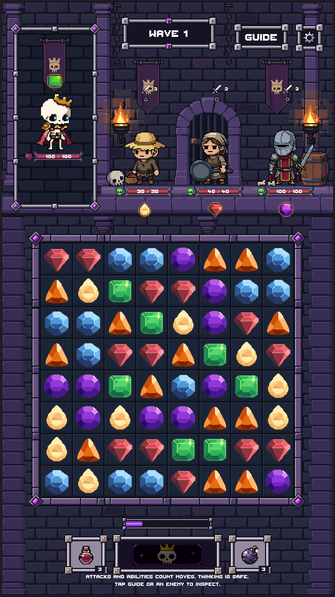

It used 35px preview cells; the live board keeps the user's existing sizing.
The production Game scene with Rattlebones, live enemies, the original 64×64 gems, health bars and interactive HUD. The approved 102-asset library is unchanged. The added 64×64 cell tile preserves the approved palette and bevels.
Dedicated branch / draft PR #203. Not merged. These are Unity play-mode captures, not real-device screenshots. The disposable capture fixture adds Pan Villager and Knight through the existing summoning API to exercise all three enemy slots.
Verification and integration report · Approved Stage 15 art-only gallery · Draft PR #203
Open PNGThe board retains its existing uniform responsive screen fit. Its cell sources and gem sources are 64×64. The modular frame fits around that board; environment and frame source pixels use integer scale. A 512-pixel board still needs uniform downsampling on a physical 360-pixel display.
